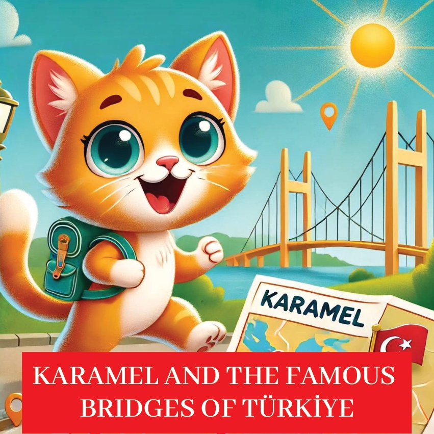
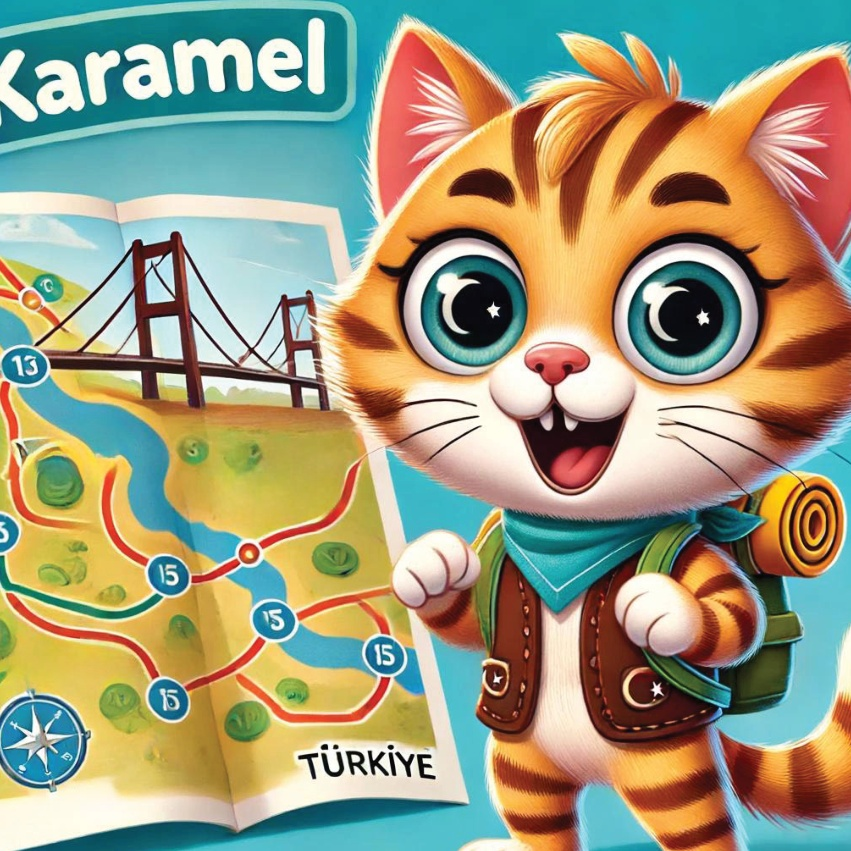
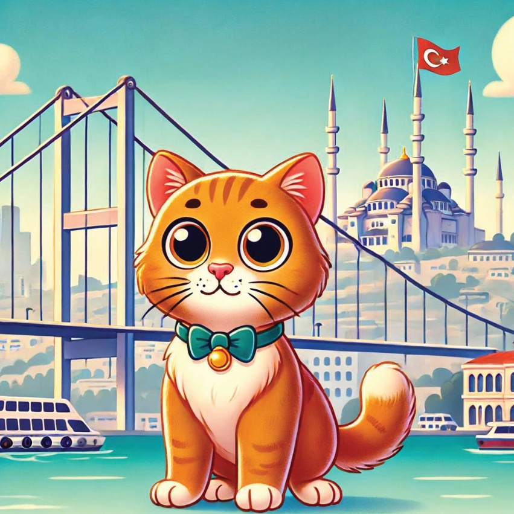
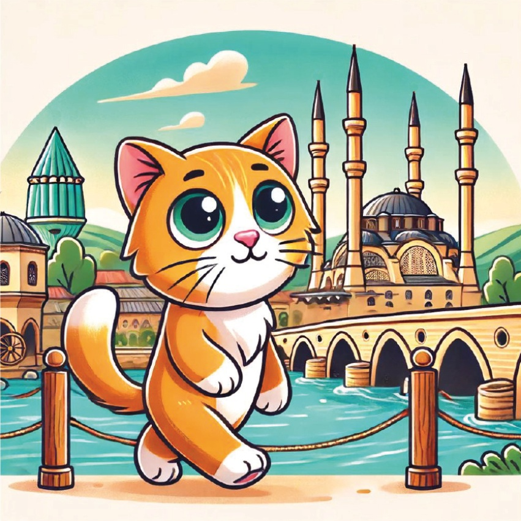
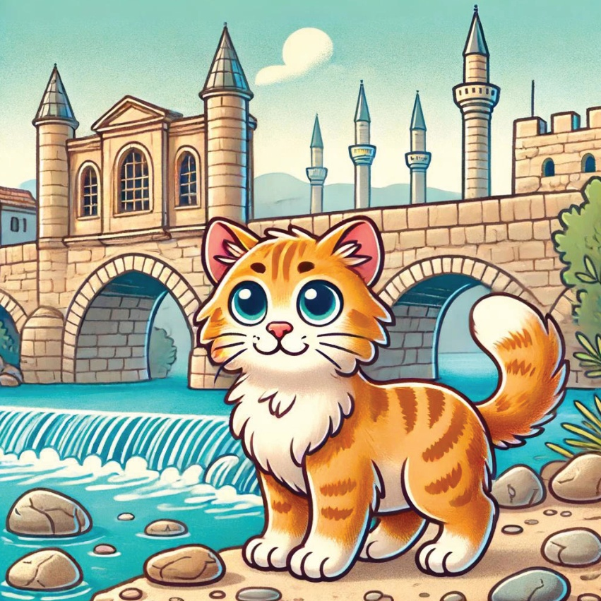
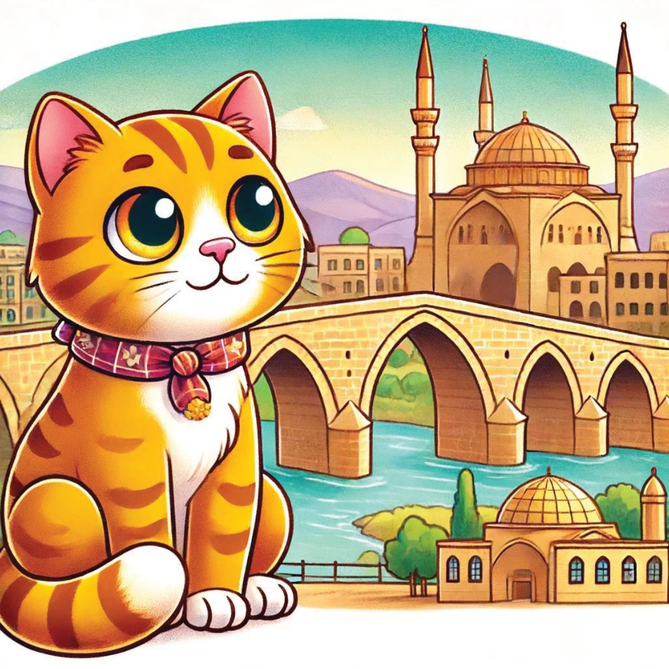
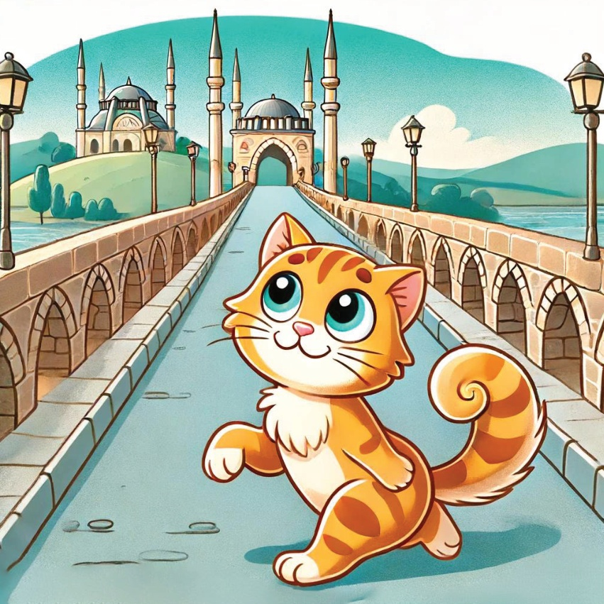
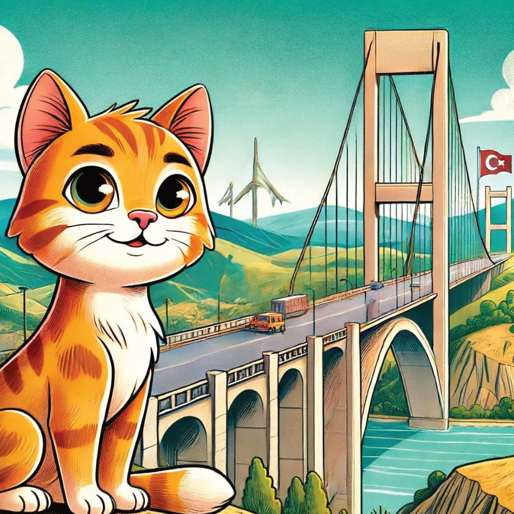
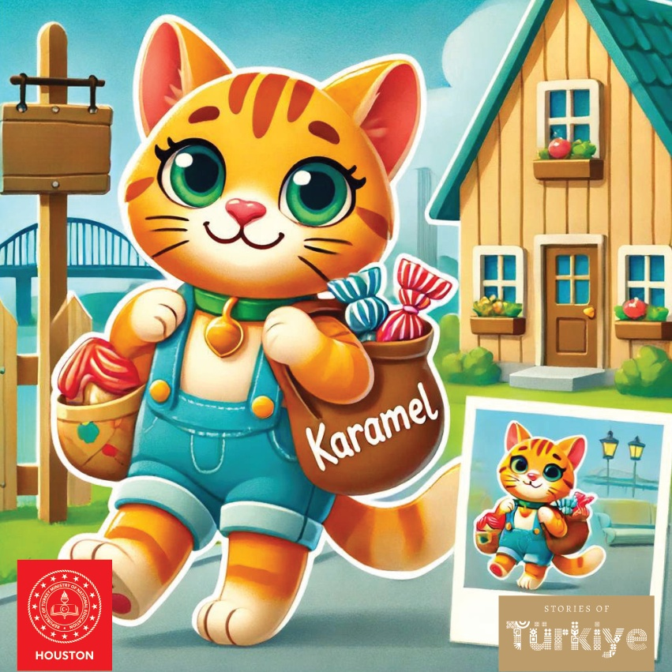

1

2

3
Қарамел атты қызықша бес, Türkiye-дің танымал көпіждерін зерттеуге шықты. Әрбір көпіждің өзінің ерекше тарихы бар еді, және Қарамел олардың тарихы мен архитектурасы туралы білуге ынта-нызды болды.
4

5
15 июля Мартиров Мост
Карамеля первым пунктом назначения был Стамбула
15 июля Мартиров Мост.
Она восхищалась моста размером
и его ролью в соединении Европы и Азии.
Вид на город с
моста был захватывающим.
6

7
Галата кешігі
Содан Карамел Галата кешігіне барды,
Бұл Алтын Даğ өзенінің әреңділігі мен тамаша көріністерімен танымал.
Ол фишермендерді көруден және астынан өтетін аялы сулақтарды көруден қызықты.
8
9
Мевлана Кешігі
Коньяда Карамел Мевлана Кешіğini зерттеді.
Ол оның тарихи маңыздылығын және элегантты дизайнын білді.
Кешік өзендікі жақсы көрінуші болды.
10

11
Жамыл, содан Аданаға езді,
әープрикті тас көпірге қарау үшін.
Ромалар жаздаған,
көпір уақыт сынағына шықты.
Жамыл оның молびに таңданды
жанындағы ақылы тарихтарды.
12

13
Малабади көпігі
Диярбакырда Карамел Малабади көпігіне барды.
Göz alıcı mimarisi ve tarihi önemi ile tanınan köprü, Карамелді әсерлі ар белгілерімен қызықтырды.
14

15
Узункёпри Мостағы
Карамелдің келесі тоқталуы Эдірнедегі Узункёпри Мостағы болды. Ол Туркиядағы екіటాс мосттың ең ұзын мостағы болды және Карамел оның тарихи маңызын бағалап, одан өту барысында бейбітшілікке бөленді.
16

17
Варда Кешігі
Карамелдің соңғы тоқтамасы Аданадағы Варда Кешігі болды, ол Герман кешігі ретінде де танымал. Ол оның биіктігіне және қандай инженерлік жетістік екеніне қызықталды. Егжей-тегжейден көрініс тамаша болды.
18

19
Жаны жайлаулары толған баяндарыммен
мәне архитектуралық таспарлармен толы ойымен,
Карамел Туркияның көпікшелері тек құрылыстар емес, байланыс пен тарихтың
символдары екенін түсінді.
Ол үйіне оқсаса,
жаңа кешігісін көздей отырып қайта келді.
20
21

22